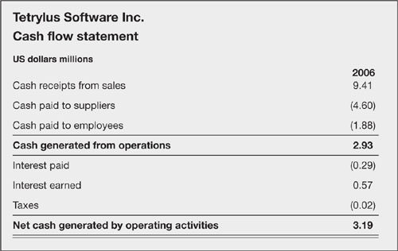
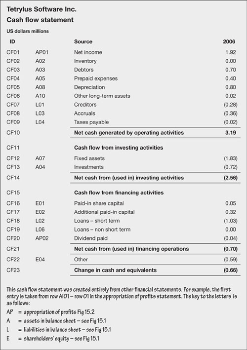
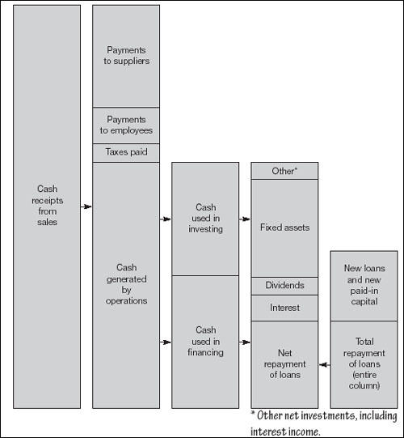

Cash flow
The cash flow statement is the third and final major financial statement (after the profit and loss account and the balance sheet). It is necessary because profit and loss accounts bear only a passing relationship to the money that actually changes hands. The cash flow statement focuses on, need I say, changes in liquidity – and incidentally reveals a lot more than just what is happening to the bank balance. Recall that the profit and loss account reveals profits. Take these two financial statements together and you have a remarkably good picture of profitability and liquidity. These are the prerequisites for overall success. In the long term it is not possible to run a business unless you have both.
This chapter describes the cash flow statement, what it is, how it is structured, what it shows, how to interpret it and how to project your own cash flow requirements.
More revelations from the balance sheet
As mentioned in the previous chapter, balance sheets are snapshots. The differences between two balance sheet dates show the net change but not necessarily all of the activity that took place. The cash flow statement records these net changes, and by rearranging them into a specific classification it helps with the interpretation of corporate results.
Cash flow statement – what it is
A statement of cash flow – or sources and uses of funds – explains changes in cash and cash equivalents during the period of the accounts (quarter, year, etc.). Cash equivalents are highly liquid instruments that are capable of being converted into known amounts of cash without notice. In the major accounting jurisdictions there is a requirement that the original maturity of the instruments should be less than three months.
Cash flow can be described directly by showing receipts from customers and payments to suppliers, employees, government, and so on (Fig. 16.1). It can also be derived indirectly by starting with net profit or loss and reversing out non-cash items (Fig. 16.2). This is how most corporations report cash flow, and this is the easiest approach when you are making your own forecasts and projections. In addition to showing how cash is generated, the cash flow statement also shows use of funds. This is essentially:
Cash from operations
less cash used in investing activities
less cash used in financing operations
equals change in cash balances.
Fig 16.1. Direct cash flow

Fig 16.2. Sources and uses of cash
The following diagram illustrates these sources and uses of funds. In the example shown, there is surplus cash generated from operations. Of course, there could instead be a deficit – which is often the case when businesses are in phases of start-up, growth, recovery, and maturity. Investing and financing could also reflect sources or uses of funds, depending on many factors.
Sources and uses of cash
Cash flow statement – what it shows
The cash flow statement is rather a nifty little document. Most financial regulators, including the International Accounting Standards Board, require that the statements classify cash flow into operating, investing, and financial activities.
Figure 16.2 illustrates cash flow using the indirect method. The techniques for constructing these tables are discussed below. The content is self-explanatory, especially if you trace the sources of each entry back to the balance sheet (see the notes in the figure). Each of the entries has already been discussed under the heading balance sheet, above. Accordingly, these notes do not labour through the figures, but list what goes into each category and indicate typical disclosure requirements. Before we begin, two other points are worth noting:
Cash flows relating to taxes are usually disclosed separately within operating activities, as here, but they could be identified under one of the other headings.
Investing and financing activities that do not give rise to cash flows (e.g. non-monetary transactions such as the acquisition of property by issuing debt) are excluded from the cash flow statement, but disclosed separately.
‘If the cash is growing at a similar rate to net profit, the net income number hasn’t been fudged.’
—Anon.
Cash flow from operating activities
This category hardly needs explanation. It is cash flow related to operating income, together with cash flow that is not shown under investing and financing activities.
Sources of funds
Sales of goods and services
Rental income
Output value added tax and refunds of value added tax
Other refunds of taxes and duties.
Uses of funds
Purchases of goods and services
Operating leases
Payments to and on behalf of employees
Input value added tax
Income tax
Other taxes and duties other than value added tax (e.g. sales taxes, import duty).
Cash flow from investing activities
Investing activities are the acquisition and disposal of long-term assets and investments not included in cash equivalents, as follows:
Sources of funds
Sales of fixed assets (e.g. disposal of plant or real estate)
Sales of other investments
Dividends and distributions of profits
Bond interest income
Disposal of other long-term assets (e.g. sale of a patent).
Uses of funds
Acquisition of fixed assets, intangible assets and other long-term assets
Equity investments
Debt investments.
Fixed assets
Equity or debt instruments of other enterprises (including acquisition or sale of subsidiaries)
Advances and loans made to, or repaid by, third parties.
Cash flow from financing activities
Financing activities are those activities that result in changes in the size and composition of the capital and borrowings of the enterprise, as follows:
Sources of funds
Proceeds from issuing shares
Proceeds from issuing bonds
Receipts from loans taken and other borrowing.
Uses of funds
Repayments of loans and other borrowings
Payments of dividends or distributions of profits
Financing costs
Interest expenses
Payments for finance leases
Repurchase of registered capital.
Issues and redemptions of equity
Borrowing and repayment of loans
Issues and repayments of debt instruments (bonds and notes).
Cash flow statement – what it means
The cash flow statement reveals:
Cash earnings – the difference between net profits and the cash generated from income producing activities
How the business is using its funds
How the business is being financed
The need for outside financing
The company’s ability to obtain financing
Where it is investing or divesting resources
How much it is investing for future growth
Its ability to generate future cash flows
Its ability to meet obligations
Its free cash flow (see below).
Cash flow from operations is a key indicator of the health of the company. As already mentioned, this figure is often negative when the company is growing (because cash is tied up in inventory and receivables, etc.). There is cause for concern if cash flow from operations is negative and the business is not growing, or if cash flow is negative for a prolonged period.
The cash flow statement also indicates how much is being invested for future growth. When interpreted carefully, this helps assess the ability of the firm to generate cash flows in the future. And, of course, the cash flow statement also reveals how the business is financed, which could be a major influence on the ability to keep trading – and could highlight inefficient use of capital. We will return to this in Chapter 19.
Free cash flow
|
| One final point. A useful indicator is free cash flow. This is cash flow from operations less investments in operating assets. It indicates the cash available for acquisitions, repayment of debt, and distributions to shareholders. |